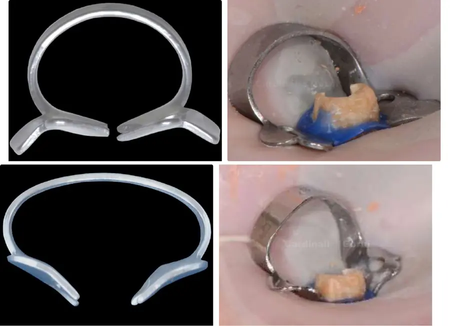
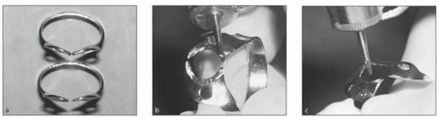

نسخه استخراجشده؛ ترجمه یا تأیید علمی انجام نشده است. وضعیت: captured
مولر اول پایین برای روکش تراش خورده و حالا درمان ریشه لازم دارد. خط خاتمهی تراش در حد لثه است. کلمپی با فک تقریباً صاف گذاشتهای و در آزمون کشیدن کمان جدا میشود. سراغ چه کلمپی میروی؟

شکل فک را از روی وضع تاج انتخاب کن:
بهای فک پرشیب را هم بدان: دندان در میدان «فرورفته» دیده میشود و دسترسی به آن سختتر است. با فک تقریباً صاف، همان دندان بیرونتر و راحتتر در دسترس است.
زاویهی فک با باز شدن کلمپ عوض میشود: وقتی فکها باز میشوند، نوکها بیشتر رو به لثه میچرخند. پس فک کلمپی مثل کلمپ W8A، پیش از باز شدن، برای بیشتر کارها باید تقریباً افقی باشد.

اگر نوکهای فک بیش از لازم رو به لثهاند و گیر عمیق زیر لثه لازم نیست:
اگر لبهی حفره عمیق زیر لثه است، همان شیب لازم است و فک را تراش نده.
در درمان ریشه با ایزولاسیون تکدندان، کلمپ بالدار انتخاب خوبی است: ورق دور دندان اپیکالتر کشیده میشود و دندان واضحتر دیده میشود.
نکتهی طلایی: فک پرشیب روی تاج سالم فقط لثه را بیشتر آزار میدهد و دندان را در میدان فرو میبرد. هر جا فک صاف پایدار است، همان را نگه دار.